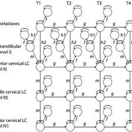
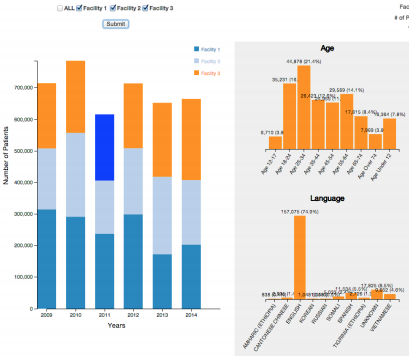
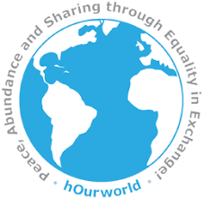
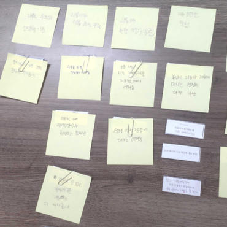
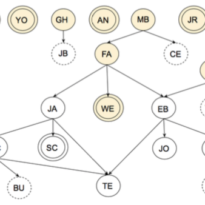

|
Projects
Current Projects
The goal of our current projects is to support individuals with special needs through design and engineering across multiple domains:
human-centered AI (#1), health informatics (#2, #3, #4), social computing (#5, #6), & accessibility (#7, #8)
but not limited to those areas.
HCAIL is currently supported by two major grants: 1) the National Research Foundation of Korea (NRF)
grant funded by the Korea government (MSIT), & 2) the other by the University of Seoul.
HUMAN-CENTERED AI
#1. Developing methods that make machine learning algorithms fair, transparent, accountable, & useful
HEALTH INFORMATICS
#2. Creating tools for user-centered healthcare (mHealth)
|
|
Development and Usability Assessment of a Food Record App for Dietary Assessments among Older Adults with Type 2 Diabetes. Under review at JMIR mHealth and uHealth.
A Study on Utilizing COVID-19 Emergency Notification
through a Design Thinking Process.
To appear at HCI Korea 2021, Zoom, January 2021.
Bounce: Designing an EKG Monitoring Application using
a Wearable Sensor through a Design Thinking Process.
To appear at HCI Korea 2021, Zoom, January 2021.
BYE-TAL: Designing a Smartphone App for Sustainable Self-Healthcare through Design Thinking Process. In Proceedings of the Asian CHI Symposium 2020 at CHI’20. ACM, Honolulu, HI, USA, April 2020.
Mutiv: Music-based Mobile Application to Support Joggers. In Proceedings of the 2016 IEEE International Conference on Healthcare Informatics, Chicago, IL, October 2016.
|
#3. Improving decision-making processes for precision medicine (clinical informatics)
|
 |
Development of a Novel Markov Chain Model for the Prediction of Head and Neck Squamous Cell Carcinoma Dissemination. In AMIA Annual Symposium Proceedings. American Medical Informatics Association, 2016 Nov;2016:1832-39, Chicago, IL, November 2016.
Coordinated Markov Modeling of Cancer Metastasis from Multiple Primary Site. In Proceedings of the Conference of the Asia Pacific Association for Medical Informatics, Seoul, Korea, November 2016.
A Model of Regional Tumor Metastasis of Squamous Cell Carcinoma of the Tongue. In Proceedings of the American Head and Neck Society (AHNS) 9th International Conference on Head and Neck Cancer, Seattle, WA, July 2016.
Biological Model Development as an Opportunity to Provide Content Auditing for the Foundational Model of Anatomy Ontology. In AMIA Annual Symposium Proceedings. American Medical Informatics Association. 2015 Nov 5;2015:2111-20, San Francisco, CA, November 2015.
|
#4. Developing digital health information infrastructures (clinical research informatics)
|
 |
Examining Researcher Needs and Barriers for using Electronic Health Data for Translational Research. In AMIA Joint Summits Translational Science Proceedings. American Medical Informatics Association. 2015 Mar 25;2015:168-72, San Francisco, CA, March 2015.
Visualizing Anomalies in Electronic Health Record Data: The Variability Explorer Tool. In AMIA Joint Summits Translational Science Proceedings. American Medical Informatics Association. 2015 Mar 25;2015:56-60, San Francisco, CA, March 2015.
Interactive Demographic Visualization of Multiple Facilities across Time. In Proceedings of the 2014 Workshop on Visual Analytics in Healthcare (VAHC), Washington, D.C., November 2014.
|
SOCIAL COMPUTING
#5. Facilitating credibility & trust on online communities
|
 |
Analyzing Bias of Comments on Political News Articles to Facilitate Transparent Online Communities. In Proceedings of the Asian CHI Symposium 2020 at CHI’20. ACM, Honolulu, HI, USA, April 2020.
Understanding Users Privacy Attitudes through Subjective and Objective Assessments: An Instagram Case Study. IEEE Computer. 51(6):18-28, June 2018.
‘MASTerful’ Matchmaking in Service Transactions: Inferred Abilities, Needs and Interests versus Activity Histories. In Proceedings of the 2016 CHI Conference on Human Factors in Computing Systems (pp. 1644-1655). ACM, San Jose, CA, May 2016.
Designing Tools to Support Advanced Users in New Forms of Social Media Interaction. In Proceedings of the 33rd Annual International Conference on the Design of Communication (p. 34). ACM, Limerick, Ireland, July 2015.
|
#6. Redesigning experiences of reviewers during a peer-review process
|
 |
Lee W, Jung H. (2020). DALT: Deep Learning Assisted Labeling Task.
To appear at the 2020 Summer Conference of the Korea Multimedia Society (KMMS), Jeju, Koera, August 2020.
Lee W, Kwon M, Hyun Y, Lee J, Gwon J, Jung H. (2020). Uncovering CHI Reviewers Needs and Barriers. In Proceedings of the Asian CHI Symposium 2020 at CHI’20. ACM, Honolulu, HI, USA, April 2020.
|
ACCESSIBILITY
#7. Improving accessibility of social media for people with visual impairments
|
 |
Understanding the Community of Blind or Visually Impaired Vloggers on YouTube. Universal Access in the Information Society. January 2020.
Challenges and Opportunities to Improve the Accessibility of YouTube for Vloggers with Visual Impairments. In Proceedings of the Addressing the Accessibility of Social Media Workshop at CSCW’19. Association for Computing Machinery (ACM), Austin, TX, USA, November 2019.
Understanding Blind or Visually Impaired People on YouTube through Qualitative Analysis of Videos. In Proceedings of the ACM International Conference on Interactive Experiences for TV and Online Video. ACM, Seoul, Korea, June 2018.
Exploring the Community of Blind or Visually Impaired People on YouTube. In Proceedings of the 19th International ACM SIGACCESS Conference on Computers and Accessibility (ASSETS ’17). ACM, Baltimore, MD, USA, 371-2.
|
#8. Toward accessible daily living: challenges & opportunities
|
|
Challenges and Opportunities for Accessible Seoul Metropolitan Buses: an Interview Study of People with Visual Impairments. In Proceedings of the Asian CHI Symposium 2020 at CHI’20. ACM, Honolulu, HI, USA, April 2020.
Challenges and Design Opportunities for Easy, Economical, and Accessible Offline Shoppers with Visual Impairments. In Proceedings of the Asian CHI Symposium 2020 at CHI’20. ACM, Honolulu, HI, USA, April 2020.
|
|